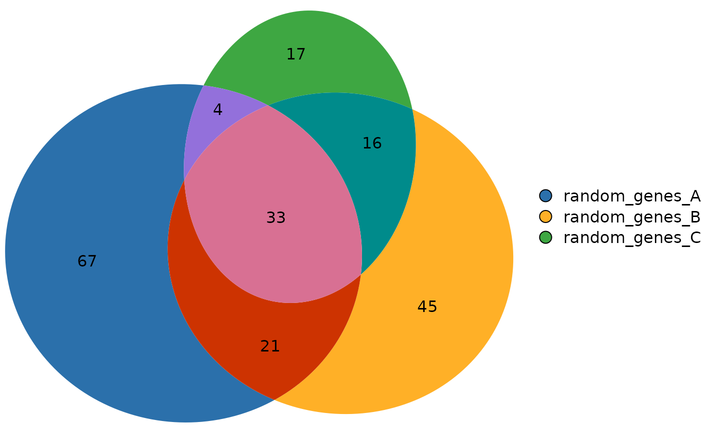

A synthetic dataset of three gene lists, created from the first 250 human gene symbols in org.Hs.eg.db.
Format
A named list of length 3. Each element is a character vector
of gene symbols:
- random_genes_A
125 gene symbols.
- random_genes_B
115 gene symbols.
- random_genes_C
70 gene symbols.
Examples
data(gene_list)
# Inspect the list
str(gene_list)
#> List of 3
#> $ random_genes_A: chr [1:125] "ALPP" "ACTG1P9" "AHSG" "ASIC2" ...
#> $ random_genes_B: chr [1:115] "AFM" "ADPRH" "AIF1" "ACVR2A" ...
#> $ random_genes_C: chr [1:70] "ACTN1" "ALDOA" "CRYBG1" "AK4" ...
# Compute overlaps and plot
ov <- computeOverlaps(gene_list)
plotVenn(ov)
